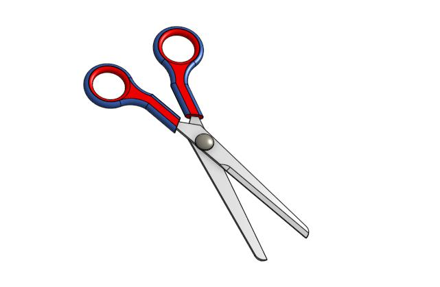
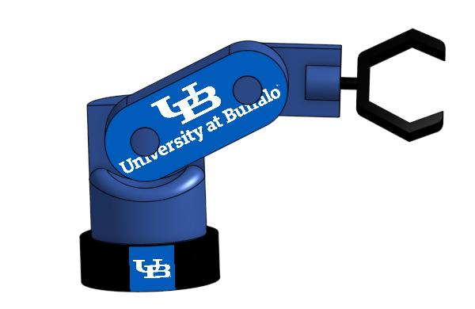

Go Kart Chassis Design

This model represents a go-kart chassis frame designed with precision to ensure structural integrity, stability, and driver safety. The framework highlights optimized geometry for weight distribution and durability, reflecting strong skills in CAD modeling, mechanical design,
and practical application of engineering principles in vehicle development.
Focus
3D Design, Structural Integrity and Durability, Mechanical Design Principles
Flower Vase Design
This flower vase model demonstrates creative product design with smooth curves, symmetric patterns, and precise surface detailing.
The design highlights skills in CAD modeling and aesthetic visualization, showcasing how engineering tools can be applied to create functional yet visually appealing household products.
Focus
Layout Design, Asthethic Designing, Surface Modeling, Structural Stability
9V Battery Design with Custom Branding

I designed and modeled a detailed 3D representation of a 9V battery, focusing on accurate proportions, realistic surface details, and component features such as the terminals and voltage marking. To enhance the look, I added a custom logo for branding.
This project highlights my skills in CAD modeling, product visualization, and digital prototyping.
Focus
Accuracy, Proportions, visualization, Branding
Design of the Iphone

I am thrilled to showcase my 3D CAD model of an iPhone, designed with attention to every detail — from the dual-lens camera module and sleek back panel to the front display
and button placements. This project enhanced my surface modeling accuracy and assembly design workflow while maintaining a minimalist aesthetic and real-world proportions.
Focus
Detailling, Properties, Surface, Camera, Ergonomics
Design of the Patio Umberlla

I designed and modeled a 3D patio umbrella to explore product design and CAD visualization. The project features a realistic canopy made up of curved triangular panels supported by a central metallic pole and a sturdy circular base. I focused on creating smooth surface transitions and realistic proportions to give it both a functional and aesthetic appeal. This project helped me strengthen my skills in 3D modeling, surface design, and material rendering,
while gaining hands-on experience in visualizing real-world outdoor furniture concepts.
Focus
Modeling, Curvature, Surfaces, Design, Concepting, Detailing, Texturing
Gage Linearity and Gage R&R Analysis

The first phase involved a Gage Linearity and Bias Study using penny drop times from various heights to assess measurement accuracy. The second phase focused on a Gage Repeatability and Reproducibility (Gage R&R) Study analyzing the consistency of flight time measurements for paper helicopters across multiple operators. Through statistical analysis and ANOVA interpretations, we identified significant sources of variation and proposed improvements for more precise data collection. This hands-on project enhanced our skills in
quality control, statistical tools, and experimental design.
Focus
Experimental Design, Quailty Control, Statistical Tools, Gage Linearity
Design of the Axial Cooling Fan

I designed this axial cooling fan in SolidWorks, modeling the housing, hub, and curved blades to balance airflow performance with a clean aesthetic. The central hub features a customized logo, and the blade geometry was built using parametric features so dimensions and performance-related parameters can be easily adjusted. This project strengthened my skills in 3D modeling, assemblies, circular patterns,
and design for manufacturability for small electromechanical components.
Focus
Airflow, Crcularity, Aerodynamics, Blades, Detailing
Design and Analysis of High-Performance Spur Gears: Leveraging Precision Engineering and CAD Techniques for Enhanced Efficiency

The main aim is to conduct a thorough examination of the spur gear's performance underneath various loading scenarios.To ensure effective power transmission and longevity, this entails making sure that the gear the field of
geometry, choice of materials, and stress analysis are all optimized.
Focus
CAD Modeling, Material Stength, Stress Analysis, Modeling
Wind Turbine Model – Sustainable Energy Design

This 3D model represents a horizontal-axis wind turbine developed as part of my exploration into sustainable mechanical design. The model includes three aerodynamic blades mounted on a central rotor hub, supported by a vertical tower and base foundation. The design demonstrates principles of aerodynamic efficiency, mechanical stability, and renewable power generation, reflecting my focus on
integrating sustainable technologies within modern engineering solutions.
Focus
Aerodynamics, CAD, Sustainable Energy, Blades, Turbine
Data-Driven Strategies to Optimize Consumer Behavior and Purchase Trends

I’m a data-driven e-commerce strategist who uses analytics to understand consumer behavior and purchasing trends. With skills in Python (Pandas, NumPy), machine learning, and predictive modeling, I translate data into actionable insights on pricing strategy, discount effectiveness, and customer segmentation. I enjoy connecting customer
demand with business goals to improve conversion rates and drive sustainable revenue growth.
Focus
Consumer Behaviour, Current Market Trends, Detailing
The Conceptual Private Jet Design

A modern business jet model featuring a sleek fuselage, swept wings, rear-mounted engines, and a T-tail,
designed to highlight aerodynamic efficiency and strong 3D modeling skills.
Focus
T-tail, Wings, Aerodynamics, Modeling, Proportions
UB Coffee Mug Design

I designed this 3D model of a custom UB-themed coffee mug, incorporating the university’s logo with a clean cylindrical form. This project demonstrates my CAD modeling and
product visualization skills, blending functionality with personalized branding.
Focus
Logo, Cylindrical, Creativity, Detailing, Prototype, Modeling, Visualization
Automotive Market Trends Through Data Analytics

I’m passionate about using data analytics to uncover automotive market trends and support strategic decision-making. By analyzing complex datasets, I identify emerging patterns, improve operational performance, and enhance customer experiences. I combine strong technical skills with industry
understanding to deliver clear, data-driven insights that help drive business growth.
Focus
Data Analytics, Business Growth, Market Trends
Custom Bottle Cap with UB Branding

I designed a 3D modeling project — a detailed bottle cap featuring the University at Buffalo logo. Designed with precise curvature, grip details, and brand alignment, this model highlights my
skills in surface modeling, text embossing, and rendering for presentation.
Focus
Logo, Creativity, Detailing, Prototype
UB Flask Design

I created this 3D model of a custom UB-themed flask, incorporating the university logo and a sleek cylindrical form. The design demonstrates my ability to integrate branding elements
with practical product design, showcasing both creativity and CAD modeling skills
Focus
Logo, Branding, Prototype, Modeling, Visualization
Design and Optimization of High-Efficiency Axial Turbines

The project's primary goal is to design, analyze, and build an axial turbine wheel, an essential part of the engines used in aerospace and power generation. The major objective is to develop a high-efficiency turbine
wheel with excellent performance and endurance, even under difficult operating conditions.
Focus
Machining, CAD, Modeling, Visualization
KPR Flask Design

I designed this 3D model of a custom flask featuring the KPR Institute logo, blending branding with a clean cylindrical structure. The design highlights my skills in CAD modeling and product visualization,
showing how functional objects can also serve as personalized and visually appealing promotional items.
Focus
Logo, Branding, Prototype, Modeling, Visualization
Scissors

I am Proud to present my 3D CAD model of a functional scissor assembly, designed with ergonomic grips and precision-aligned blades. This project involved careful attention to part modeling, material selection, and realistic motion simulation to replicate the pivoting mechanism. This model not only strengthened my understanding of mechanical joints and assemblies but also
honed my skills in creating consumer product components that balance form and function.
Focus
Assembly, Ergonomics, Modeling, Precision, Prototyping, Design, Functionality
Design and Optimization of High-Performance Ball Bearings for Enhanced Load-Bearing Capacity and Durability

This project describes the planning, analysis, and creation of a high-performance roller bearing. Ball bearings are crucial features of many mechanical systems because they lower friction between components that rotate and sustain revolving shafts. The goal is to create a ball bearing with exceptional performance, robustness, and dependability for
demanding uses in industrial machinery, automotive, and aircraft industry.
Focus
Computer Integrated Manufacturing, Modelling, Fitting, Design
Robot

I designed and modeled a functional robotic arm assembly using CAD software as part of an academic project at the University at Buffalo. The project demonstrates foundational concepts in mechanical design and robotics, incorporating rotational joints and a gripping end effector. University branding was integrated to highlight institutional identity.
This model serves as a prototype for educational demonstrations in mechatronics and automation.
Focus
Robotics, Kinematics, Assembly, Integration, Branding, Rotation, Gripper
V6 Engine

I designed a detailed 3D CAD model of a V6 internal combustion engine, featuring coordinated piston, crankshaft, and connecting rod motion.
Explored engine dynamics, tolerancing, and motion simulation to demonstrate real-world mechanical behavior. Gained hands-on experience in precision design and kinematic analysis of multi-component assemblies.
Focus
Piston, Crankshaft, Rotation, Alignment, Connecting Rods
Innovative Design and Development of a High-Performance All-Terrain Vehicle (ATV): A Comprehensive Project Management Approach for Off-Road Excellence

This project involves the innovative design and development of a high-performance All-Terrain Vehicle (ATV) that excels in off-road environments.
The approach integrates cutting-edge engineering, advanced materials, and optimized suspension systems to enhance durability, speed, and maneuverability. The project follows a comprehensive project management framework, focusing on key areas such as scope definition, timeline management, resource allocation, risk assessment, and quality assurance.
Focus
Chassis Design, Project Charter, Quality Assurance, Risk Assessment
Flat Head Screw Driver

This 3D CAD model represents a flat head screwdriver, carefully designed to capture both aesthetic form and functional accuracy. The model features a contoured blue handle for ergonomic grip and a precisely shaped flat tip, commonly used in mechanical assembly and repair. Through this project, I developed key skills in part modeling, filleting, extrusion techniques,
and design intent for everyday tools—strengthening my proficiency in CAD software and mechanical component design.
Focus
Modeling, Assembly, Detailing, Parametric, Tolerancing
Implementation of Comprehensive Industrial Hygiene Programs: Strategies for Ensuring Workplace Safety and Compliance with Occupational Health Standards

I conducted an industrial hygiene survey at a welding facility to evaluate employee exposure to hazardous substances such as manganese, chromium, iron, carbon monoxide, and UV radiation. Using OSHA and ACGIH standards, I assessed air quality, PPE use, ventilation effectiveness, and ergonomic conditions. The investigation identified risks linked to metal fumes and poor workspace design contributing to symptoms like headaches and hand tremors. Proposed evidence-based interventions include enhanced local exhaust ventilation, PPE upgrades,
medical surveillance, and ergonomic workstation adjustments to improve worker health and safety.
Focus
Health Inspection, Ergonomics, Safety, Facility Evaluation
Sledge Hammer

This 3D CAD model showcases a detailed representation of a sledge hammer, designed with precision to demonstrate both mechanical structure and ergonomic handling. The model features a robust black hammerhead and a solid, polygonal wooden handle—highlighting material differentiation and assembly techniques. This project enhanced my skills in parametric modeling, assembly constraints, and realistic rendering,
contributing to my growing proficiency in mechanical design and CAD software tools.
Focus
Precision, Ergonomics, Visualization, Geometry, CAD, Design
Socket Wrench

I created a detailed 3D CAD model of a socket wrench, focusing on precision, functionality, and realistic proportions. This project enhanced my skills in mechanical modeling, including defining cylindrical and angular features to simulate torque-driven functionality. The design includes a compact socket head and an elongated handle optimized for leverage and accessibility in tight spaces. Through this project, I strengthened my understanding of tool design, ergonomics,
and CAD best practices—an essential step in developing real-world mechanical components.
Focus
Materials, Rendering, Ergonomics, Constraint
Design and Optimization of the 5-Blade Boat Propeller Design

Designed and optimized a 5-blade boat propeller using advanced CAD modeling techniques to enhance hydrodynamic efficiency and reduce cavitation. Focused on achieving optimal blade geometry and curvature for improved thrust and smoother flow dynamics. This project emphasized precision engineering, performance simulation,
and fluid mechanics application to deliver a more efficient marine propulsion solution.
Focus
Propeller, Hydraulics, Modeling, Simulation
Quick Return Mechanism

I developed and simulated a Quick Return Mechanism using CAD tools to demonstrate its efficiency in converting rotary motion into reciprocating motion with reduced return stroke time. This project showcases the practical application of kinematic principles in mechanical systems,
highlighting improvements in operational speed and mechanical advantage through design optimization.
Focus
CAD, Modeling, Simulation, Slider, Rotating
Design of Experiments (DOE) & Optimization

In this project, our team applied a fractional factorial design (Resolution V) to analyze the effects of five factors—rotor length, leg length, leg width,
paper type, and paper clip—on the flight time of paper helicopters. Using statistical tools in Minitab, we identified paper type as the only significant factor (p = 0.011) influencing performance. Optimization via Response Surface Methodology led to a 12% improvement in average flight time. The project strengthened my skills in DOE, regression analysis, hypothesis testing,
and practical application of quality engineering methods.
Focus
DOE, Factorial Design, Simulation, Rotor Length
Allen Wrench

The Allen wrench, also known as a hex key, is a simple yet indispensable tool used to drive bolts and screws with hexagonal sockets. Its L-shaped design provides excellent leverage and accessibility in tight spaces. Commonly used in furniture assembly, machinery, and mechanical applications, the Allen wrench is valued for its precision, ease of use, and compact form.
This 3D CAD model captures the geometric accuracy and functional design of the tool, reflecting its real-world engineering significance.
Focus
Tool, Inspection, Modeling, Geometric Dimension and Tolerance
T-Pipe Fitting for Piping Systems

I'm excited to share this 3D CAD model of a T-pipe fitting, commonly used in fluid and gas transportation systems for splitting or redirecting flow. Designed with precision and optimized for manufacturability,
this model highlights key skills in surface modeling, part intersections, and geometry control.
Focus
Piping, Inspection, Fitting, Design
Process Control and Capability Analysis

I collaborated on a comprehensive project to analyze the process control and capability of measuring paper helicopter flight times using a stopwatch app. We used Xbar-R charts to assess process
stability over time and identified variations through statistical tests.
Focus
DOE, Factorial Design, Simulation
Analyzing the environmental and social impact of sustainable practices in the context of e-business operations

This project refers to the practice that helps to reduce the negative impacts of the environment promotes social equity, and ensures economic viable. It describes various strategies and actions that aim to reduce the carbon footprint,
enhance resource efficiency, and sustainable growth in the digital business.
Focus
Sustainability, Digital Business, Carbon Print, Environmental Impact
Compact Utility Companion : Multipurpose Keychain

This Project is designed to provide a variety of essential tools in a compact and convenient. This Keychain has a combination of functionality, durability, and portability. This keychain is manufactured in the
form of a motorcycle to reduce the weight of the keychain and accommodate multiple tools in the keychain.
Focus
CAD, Keychain, Tools Accomodation, Multipurpose, Utility
Enhancing Operational Efficiency and Customer Experience through Retail Store Optimization using A-Score Efficiency

This project aims to design the initial and proposed layout for the retail store to improve efficiency from 61% to 81%. It is necessary to reduce space between products
and time to increase productivity and profitability.
Focus
Facility Layout, Retail Store Design, Operational Efficiency
Performance Study of a Single Slope Solar Still using Nano Disbanded Phase Change Material

This project is designed and implemented to convert saline water into pure drinking water. In this process, the paraffin wax is mixed with the Zinc Oxide (ZnO).
Focus
Desalination, Solar Still Efficiency, Phase Change Material